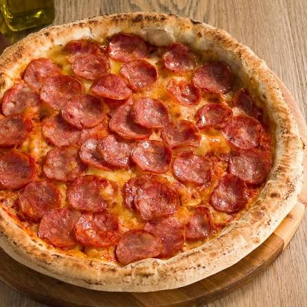
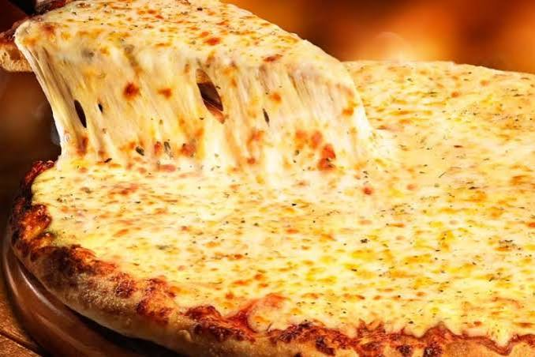
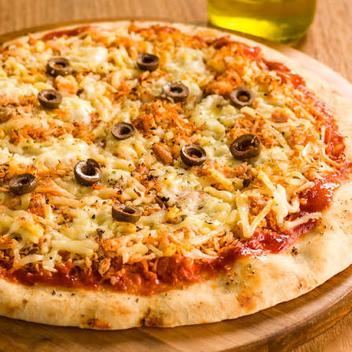
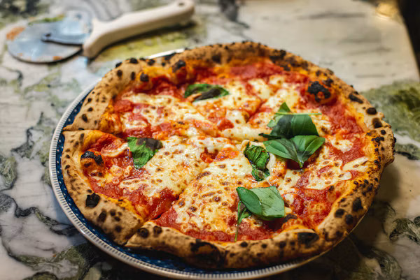
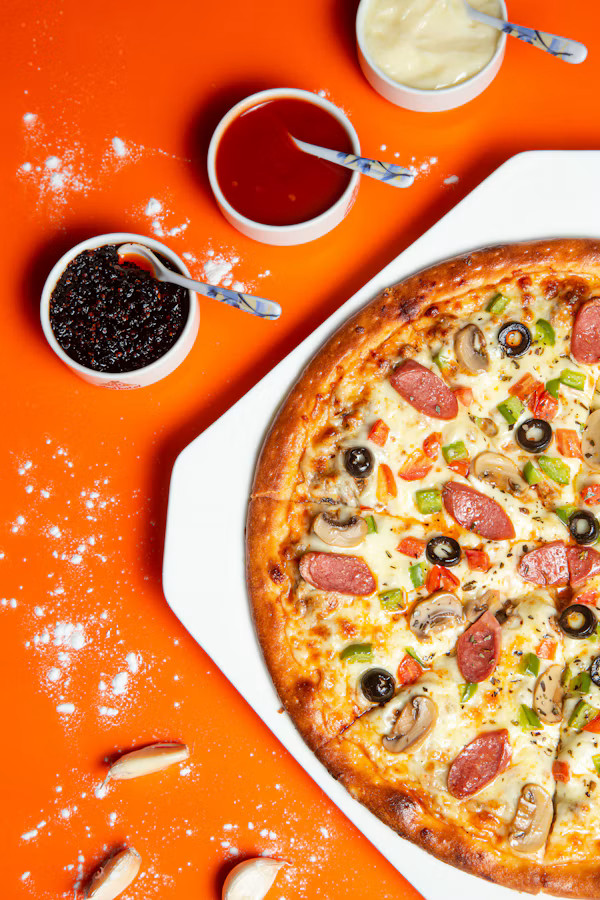
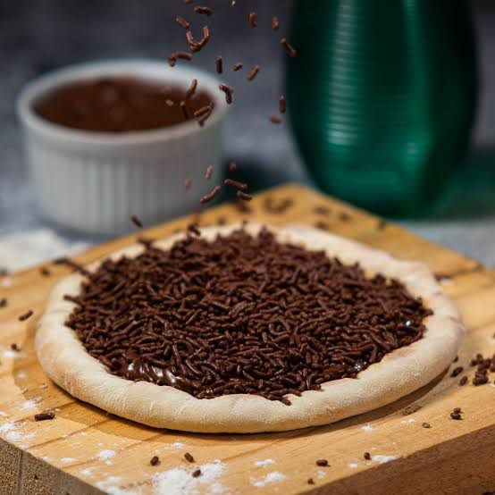
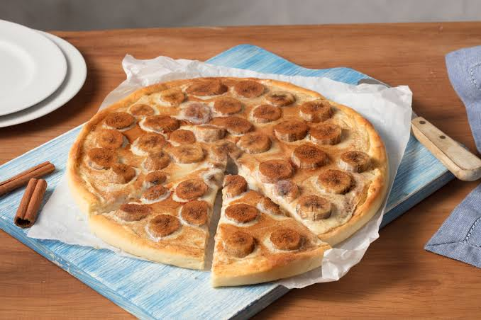

Pizza de Calabresa

Molho de tomate, muçarela, calabresa fatiada, cebola e orégano.
Preço: R$ 45,00
Confira nossos sabores de pizzas, preparados com ingredientes selecionados para tornar sua refeição ainda mais especial.

Molho de tomate, muçarela, calabresa fatiada, cebola e orégano.
Preço: R$ 45,00

Molho de tomate, muçarela, tomate fresco e orégano.
Preço: R$ 42,00

Molho de tomate, frango desfiado, catupiry e muçarela.
Preço: R$ 49,00

Molho de tomate, muçarela, parmesão, provolone e gorgonzola.
Preço: R$ 55,00

Molho de tomate, muçarela, presunto, ovos, cebola, azeitonas e orégano.
Preço: R$ 52,00

Massa de pizza com chocolate ao leite e granulado.
Preço: R$ 40,00

Banana, açúcar, canela e leite condensado.
Preço: R$ 38,00